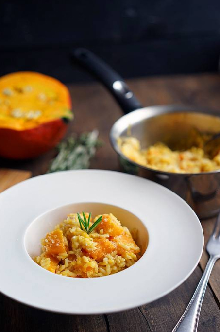

🥘 Ризотто с тыквонини
📋 Ингредиенты
- Тыква — половина (≈600 г)
- Чеснок — 4 зубчика
- Оливковое масло — 50 г (~3 ст. л.)
- Лук красный — ½ головки
- Рис Карнароли или Виллоне — 200 г
- Бульон (овощной или куриный) — ~1 л
- Сливочное масло — 50 г
- Пармезан — 100 г (мелко тёртый)
- Соль, перец — по вкусу
👩🍳 Приготовление
- Подготовьте тыкву. Разрежьте половину тыквы ложкой выньте семена. Нарежьте дольками толщиной 1,5–2 см, очистите от кожуры и нарежьте кубиками. Вторую половину заверните в плёнку — завтра снова захотите ризотто!
- Обжарьте тыкву. Мелко нарубите 2 зубчика чеснока. На сковороде разогрейте половину оливкового масла, выложите кубики тыквы и обжаривайте 7–10 минут до лёгкой корочки. Затем переложите тыкву в миску.
- Сделайте базу ризотто. В той же сковороде добавьте оставшееся масло. Мелко нарубите ещё 2 зубчика чеснока и половину красной луковицы. Обжарьте до прозрачности лука (2–3 минуты).
- Обжарьте рис. Всыпьте 200 г риса (обязательно Карнароли или Виллоне — другой сорт не даст нужной кремистости!). Постоянно помешивая, обжаривайте рис 1–2 минуты, чтобы он пропитался маслом и ароматами.
- Добавляйте жидкость. Залейте рис полностью горячим бульоном (или кипятком, если нет бульона). Убавьте огонь до среднего. Постоянно помешивайте. Как только жидкость впитается/выпарится, подливайте новый половник. Так повторяйте 20–25 минут.
- Верните тыкву. Минут через 10 после начала добавления бульона положите к рису обжаренные кубики тыквы. Продолжайте подливать бульон и мешать, стараясь не раздавить тыкву (хотя некоторые кубики разломятся — это даже хорошо).
- Проверьте готовность. Когда рис почти готов (мягкий, но с лёгкой сердцевинкой), перестаньте добавлять жидкость. Ризотто должно быть не кашей, а нежной массой, которая слегка колышется.
- Финиш. Выключите огонь. Добавьте 50 г сливочного масла и тщательно вмешайте — текстура станет бархатистой. Затем добавьте 100 г мелко тёртого пармезана (не жалейте!). Ещё раз перемешайте до полной гладкости.
- Подача. Разложите ризотто по тёплым тарелкам (идеально — тарелки для пасты, они дольше держат тепло). Сверху можно посыпать ещё немного пармезана и украсить зеленью. Подавайте сразу — ризотто не любит ждать.
Buon appetito, дорогие! Пусть Италия будет у вас на тарелке! 🎃🧀
